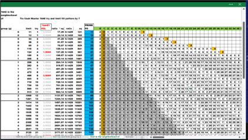

In the column with the title 'zeros' is manufactured data. From: Tio Cash Master 1600 1 seventh 0a in the neighborhood of
Inside the XLS file
The number of zeros (factors) is counted and placed in this column. If equals 2 it is prime , then show it ; else hide the value. This is derived from the 'Factors' box.
Prime only - sort off all others ; using the 'zeros' as the next sort , any number with a count greater than two is sorted off. Multiple factors , therefore non-prime is sorted off. The gray cells in the matrix are the limit of the *ratio of 1/7.
A close view of only the primes up to 61. This is small view of the yellow painted cells ; with the value of one (1) (left side) and PS (right side). There are no other painted cells in between. No other factors.
Up to 149. A chopped off version showing the *ratio limit of 1/7th. There are no yellow painted cells under the gray fuzz.
Group by (g7) =3D 6 , 7 ,8 ,9 ,10. Another chopped off view ; showing the (g7) groups together with the *ratio 1/7.
In a larger view are all the prime and the 1/7th limit grayed out in the matrix. There is a familiar pattern in this chart. The telltales are the white streaks on the right side. These are *fam02 , *fam03 , *fam04 , *fam05 , and *fam06. All the things eliminated in the very beginning by sorting rules. The weight of the numbers , the fonts , and sizes show a clear pattern. These values are from the MOD() function.
Up to 193.
Look inside the XLSX file and changing the zoom level will help with viewing the above charts.